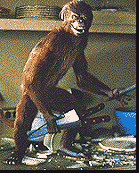

Contents | Features | Reviews | News | Archives | Store |
 |
|
| Movie Credits | Buy It! |
Jumanji
Review by Carrie Gorringe
 |
Directed by Joe Johnston. Starring Robin Williams, From the novel by Chris Van Allsburg. |
In the opening sequence of Jumanji the audience witnesses the hastily-arranged burial of something with obviously sinister significance. When one young boy asks his companion what might happen if the crate that they are consigning to the terrestrial depths should ever again see the light of day, the other boy replies with appropriate solemnity, "May God have mercy on their souls". The response would sound rather trite, if the time weren’t 1869 and the place weren’t New England -- New Hampshire, to be precise.
Fast forward exactly 100 years, and -- you guessed correctly -- that crate and its dastardly contents are back. For the crate contains a board game called Jumanji, which offers up a safari-like experience for its players. But, as has already been surmised from the portentousness of the foregoing sequence, this is no ordinary game. As if you needed any help in determining that fact, it should be noted that the game pieces move without human assistance. Indeed, to call Jumanji an adventure game is somewhat like suggesting that Richard Nixon suffered from a mild form of suspiciousness. With each roll of the dice, the game offers up, as the inscription on the board makes quite clear, "a way to leave the world behind." The problem is that Jumanji substitutes the really primal terrors from deepest Africa -- herds of thundering elephants and rhinoceroses, simians with a rather black sense of the comic, and foliage with malevolent growth potential, not to mention the requisite poison darts -- as a most unwelcome alternative to the real and imagined horrors of suburban ennui. Of course, the game might also opt for swallowing someone whole, as it does Alan Parrish (Hann-Byrd), the scion of a local shoe manufacturer. On the face of it, however, this consumption-by-game might not seem quite as bad as it sounds; as the focus of a bully’s attentions, Allen finds the prospect of leaving the world behind to be a rather attractive proposition -- on a rather more temporary and theoretical basis than the game permits, to be sure. During a foray on the grounds of his father’s factory, Alan finds the game and decides to play it with his friend, Sara. Neither has any idea of what is about to unfold -- but, rest assured, the outcome is not a good one.
Fast forward again to the present, in which two orphaned children Judy (Dunst) and Peter (Pierce) are residing with their Aunt Nora (Neuwirth) in the Parrish manse. We learn that the family, the business and the town have fallen into urban blight following Alan’s unexplained disappearance. But the two children find the board game, and begin playing, only to bring back a now grown-up Alan (Williams) from his safari sojourn, and, in the process, cause further upheaval involving the aforementioned animals (including a rather hungry lion in Aunt Nora’s bedroom who, on the topics of ruling his turf and gaining nourishment, does not seem too inclined to take "no" for an answer). Nevertheless, the audience learns that the game has very strict rules governing play; not only must a game be finished once it has begun, but all of the players that initiate the game must finish it and take turns in order. So the other participant from that 1969 game must be brought back, in order that all of the destruction caused by the game, not to mention the course of history, can be set right.
At first glance, this is a task which fits into the category of easier said than done. Over the years Sara (Hunt) has become a triple threat: a hopeless neurotic, recluse and therapy junkie. She literally has to be dragged kicking and screaming back to the board. Others in the town are not finding this sudden deluge of wildlife any easier to cope with. Officer Carl Bentley (Grier) is being driven mad by some monkeys, who have a particular liking for grand theft auto, especially when a certain vehicle has such nice flashing lights and a loud siren with which to scare the natives silly (we won’t even discuss the monkeys’ extreme distaste for stopping at a four-way intersection; the consequences are funny, although in a rather predictable fashion). To succeed, Alan must finish the game without, among other problems, getting killed by a stampede and while contending with the maniacal pursuit of a hunter (looking and behaving like someone straight out of the pages of a most perverse manifestation of Kipling) who wants to add Alan to his trophy collection. This is a narrative that borrows from the short story The Most Dangerous Game in more ways than one.
To say that this film sometimes moves too quickly, and with too little ground under its feet, would not be an understatement. In fact, there are times in Jumanji when the special effects threaten to, shall we say, shoot all manner of narrative order to bits in this wild whirligig of a film; the rate at which the animals and other horrors pop out is so rapid that one could be forgiven for finding oneself spinning in one’s seat. Moreover, despite all of this frenetic activity unfolding on screen, there seems to be a curious emptiness to the entire process, as if the result of excess was not tension, but, rather, monotony. At these moments when annoyance threatens to set in for good, the performances, some of them first-rate, keep the film grounded -- though the outcome seems, at times, to be somewhat too close to call for comfort. Williams, in a more-restrained mode of acting than usual, is engaging and credible as the bemused but well-meaning Alan. Grier plays an excellent straight-man role as the hapless police officer whose ever-increasing misery over events beyond his control are reflected unerringly on his face. But it is Dunst who steals the spotlight from them all. Capitalizing on her excellent work in Interview With the Vampire and the recent remake of Little Women, Dunst has the correct balance of childish world-weariness and naivete; she’s bitter without being cynical in that pseudo-adult fashion which is typical of her Hollywood peers. Although this film adds luster to Dunst’s already well-burnished reputation, the wonderful moments don’t add up sufficiently to keep the film exciting in a pleasant rather than in an unpleasant fashion.
Jumanji is going to have problems finding a wide-enough audience. Children might appreciate the film’s special effects, but it really is too scary for children under the age of ten. On the other hand, the film doesn’t have enough depth to make it sufficiently intriguing to an older audience. Those who might expect a traditional Robin Williams performance will be disappointed. Whether the special effects and the film’s thematic undercurrent of regret at unrealized childhood dreams -- executed neither subtly nor originally -- will generate interest remains to be seen.
Contents | Features | Reviews | News | Archives | Store
Copyright © 1999 by Nitrate Productions, Inc. All Rights Reserved.